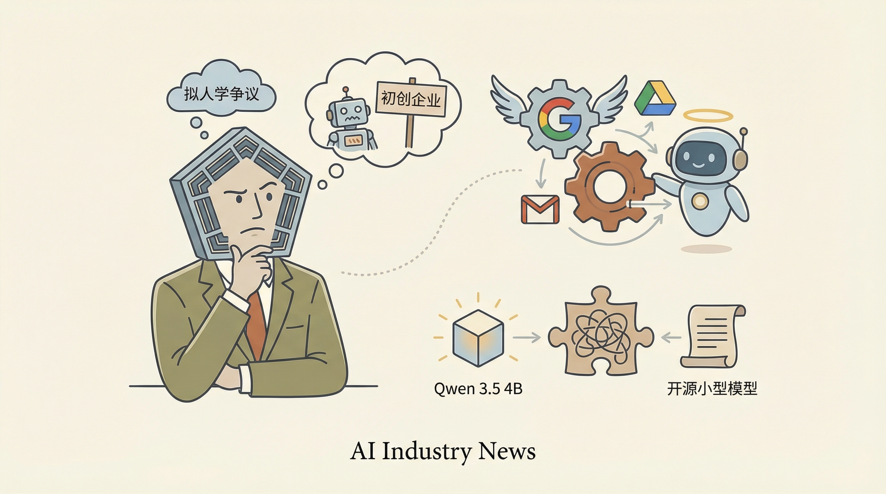

五角大楼与Anthropic的争议可能令初创公司远离国防合作。
两克伴AIGC日报
2026-03-09 星期一

本期关注：开源小型模型Qwen 3.5 4B突破抽象测试，Claude军事应用引伦理争议，Google简化Gmail/Drive的AI代理使用，五角大楼合作争议或影响初创企业国防参与。
📰 行业动态
Google简化了Gmail和Drive的AI代理使用方式。
🔥 今日焦点
近日，在Reddit上，一位用户分享了关于Qwen 3.5 4B模型的一项突破性进展。该模型在抽象测试中表现出色，成为首个解决该问题的开源小型模型。在此次测试中，Qwen 3.5 4B成功将复杂数字序列转换为简洁的字母组合，而许多大型模型如GPT-4、OSS 20B、Gemini 2.5等均未能完成这一任务。
这一成果对AI领域具有重要意义。首先，它展示了小型开源模型在特定任务上的强大能力，为AI研究提供了新的思路。其次，Qwen 3.5 4B的成功表明，模型大小并非决定其性能的唯一因素，模型的设计和优化同样至关重要。此外，这一突破也为开源AI研究提供了新的动力，有助于推动AI技术的普及和发展。
据《华盛顿邮报》报道，美国军方在针对伊朗的军事行动中，利用了Anthropic公司开发的AI模型Claude，以实现24小时内对1000个目标的精准打击。Claude与军事的Maven智能系统合作，负责提供目标建议和精确坐标。这一事件揭示了AI在军事领域的应用潜力，同时也引发了关于AI伦理和安全的讨论。
这一事件的重要性在于，它展示了AI在军事行动中的实际应用，以及AI在提高作战效率方面的潜力。同时，这也引发了关于AI伦理的讨论，包括AI在战争中的使用是否合理，以及如何确保AI系统的安全性等问题。
在《Before You Use Claude, Create This File》一文中，作者The PyCoach提出了一种通过创建一个.md文件来优化Claude模型输出并节省未来时间的创新方法。该文件的核心内容是预先定义一系列参数和指令，以指导Claude在生成文本时更加精准和高效。这一做法的重要性在于，它能够显著提升AI模型的输出质量，减少人工调整和优化所需的时间，从而提高AI应用的开发效率。
在AI领域，这一方法的影响不容小觑。随着AI技术的不断进步，如何提高模型的输出质量和效率成为了一个关键问题。通过创建一个专门的文件来预设参数和指令，不仅能够帮助开发者快速定制AI模型，还能在模型训练和部署过程中减少试错成本。这种方法有望成为AI应用开发中的一个标准实践，推动AI技术在各个领域的应用更加广泛和深入。总之，The PyCoach提出的这一创新方法为AI从业者提供了一种高效、实用的工具，有助于提升AI模型的性能和应用价值。
📚 深度长文
本文深入探讨了如何通过长上下文推理技术突破Transformer模型的记忆与推理瓶颈。作者Devansh详细介绍了新型架构，这些架构旨在解决传统Transformer在处理长文本时遇到的挑战。文章核心观点在于，通过引入长上下文推理，可以有效提升Transformer模型在处理复杂任务时的性能和效率。
文章首先分析了Transformer模型在处理长文本时的局限性，包括内存占用过高和推理速度缓慢等问题。接着，作者详细介绍了长上下文推理技术的原理，并阐述了其如何通过优化模型架构来解决上述问题。文章中，作者列举了多个实际案例，展示了长上下文推理在自然语言处理、计算机视觉等领域的应用效果。
本文探讨了AI领域的成功秘诀，作者Qasar Younis分享了他如何通过保持低调成功构建了一家价值150亿美元的公司。文章指出，情绪是影响决策的过滤器，扭曲了我们对成功的判断。Younis强调，真正的AI革命正在物理世界中发生，而非仅仅是数字领域。本文深度剖析了AI行业的发展趋势，为AI从业者提供了独特的见解和思考。阅读本文，你将了解到如何克服情绪干扰，把握AI革命的发展脉搏，为你的职业生涯注入新的活力。
---
在《AI将使工程更人性化，而非更机械化》一文中，作者Zach Mink深入探讨了现代工程发展中的变革与挑战。文章核心观点是，尽管AI技术在工程领域的应用日益广泛，但它并非取代人类工程师，而是使工程工作更加人性化。
Mink通过分析AI在工程领域的应用，指出AI在处理复杂计算、优化设计等方面具有显著优势，但工程领域仍需人类工程师的创造力和判断力。他以建筑行业为例，阐述了AI在建筑设计中的应用，强调AI可以辅助工程师进行方案优化，但最终的设计决策仍需人类工程师的参与。
🛠️ 产品推荐
Agentlytics是一款AI编码助手统计工具，旨在帮助开发者统一管理多款AI编码工具的使用情况。通过一键命令，Agentlytics可整合14款编辑器数据，包括成本估算、AI对话搜索、活动热图、趋势分析等，帮助用户全面了解各工具的使用效果，优化编码效率。该产品特别强调其100%本地化处理，保障用户数据安全。Agentlytics助力开发者轻松掌握AI编码助手使用情况，提升工作效率，为技术从业者提供便捷的统计解决方案。
---
Show HN: From Agentic Reasoning to Deterministic Scripts是一款探讨智能代理推理与确定性脚本在AI领域的文章。文章深入解析了智能代理推理在决策过程中的作用，以及如何通过确定性脚本优化AI算法。对于技术从业者而言，该产品有助于理解AI在复杂决策环境中的应用，为提升算法性能和智能系统稳定性提供新思路。
---
Pacto是一款基于OCI分布式合约的云原生服务解决方案。该产品旨在解决服务描述碎片化的问题，将API、部署假设、运行时细节、配置和环境变量等关键信息集成到一个统一的、可机器读取的合约中。通过Pacto，用户可以轻松管理云原生服务的各个组件，提高服务部署和运维的效率。Pacto的核心价值在于简化服务描述，降低运维成本，提升服务质量和稳定性。